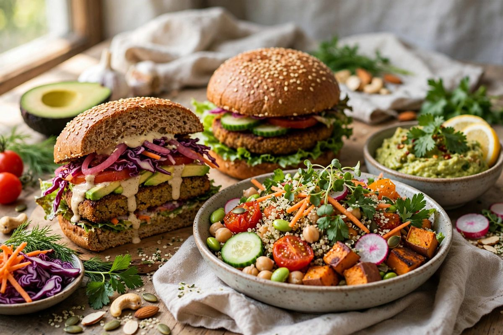

Home » Guides
Vegan Burgers

A good vegan burger is hearty, flavourful, and holds together in the bun. Whether you make them from beans, lentils, mushrooms, or tofu, the principles are the same: a protein base, a binder, seasoning, and a good cook. This guide explains how to make burgers from scratch, how to cook them, and what to serve with them.
Bean and lentil burgers
Bean burgers are the easiest to make. Mash a tin of black beans or chickpeas, mix with cooked rice or oats, onion, garlic, and spices, and form into patties. Lentil burgers work the same way, with cooked lentils, breadcrumbs, and cumin. The mixture should hold together when squeezed — if it is too wet, add more oats; if too dry, add a spoonful of water or tomato paste. Chill the patties for thirty minutes before cooking so they firm up. These burgers are cheap, high in fibre, and endlessly variable with different beans and spices.
Mushroom and vegetable burgers
Mushrooms give burgers a meaty, savoury flavour. Finely chop mushrooms, cook them until their water evaporates, then mix with walnuts, breadcrumbs, and soy sauce. A beetroot burger, made with grated beetroot, black beans, and oats, has a striking colour and a sweet, earthy taste. Sweet potato and black bean burgers are another favourite, with cumin and smoked paprika. For a firmer texture, add ground flaxseed as a binder and let the mixture rest for ten minutes before shaping.
Cooking and serving
Pan-fry burgers in a little oil for four to five minutes per side, until crisp and golden. Baking works well for a batch: place patties on a lined tray, brush with oil, and bake at 200 degrees Celsius for twenty minutes, turning once. Air-frying gives a crisp result with less oil. Serve in a bun with lettuce, tomato, onion, pickles, and a sauce — vegan mayo, barbecue sauce, or guacamole all work. Add a slice of vegan cheese if you like. Serve with oven chips, sweet potato wedges, or a salad.
Shop-bought burgers
Shop-bought vegan burgers have improved enormously, and they are a convenient option for barbecues and busy nights. Look for ones with a short ingredient list and a reasonable amount of protein — at least 10 grams per burger. Some are highly processed and high in salt, so check the label. Cook them according to the packet, and serve them the same way as homemade burgers. They are more expensive than homemade, but they are useful to keep in the freezer for emergencies.
Burgers for a barbecue
Vegan burgers work well on a barbecue, but they need a little care. Use a grill basket or a sheet of foil, so the patties do not fall through the bars. Brush the grill with oil and preheat it well, so the burgers form a crust quickly. Cook shop-bought burgers according to the packet, and homemade burgers for four to five minutes per side. Keep the buns warm on the edge of the grill, and set out toppings — lettuce, tomato, onion, pickles, and sauces — so everyone builds their own. A barbecue is a good place to show non-vegan friends that vegan food is normal, delicious food, and a well-made burger is the best ambassador.
Frequently Asked Questions
How do I stop vegan burgers falling apart?
Use a binder such as oats, breadcrumbs, or flaxseed, chill the patties before cooking, and do not flip them too often. Let them form a crust before turning.
Can I freeze homemade vegan burgers?
Yes. Freeze them raw on a tray, then stack them with baking paper between each one. Cook from frozen, adding a few extra minutes.
What is the best vegan burger bun?
Any soft bun works, but check the label — some buns contain milk or egg. Wholemeal buns add fibre, and lettuce wraps are a lighter option.